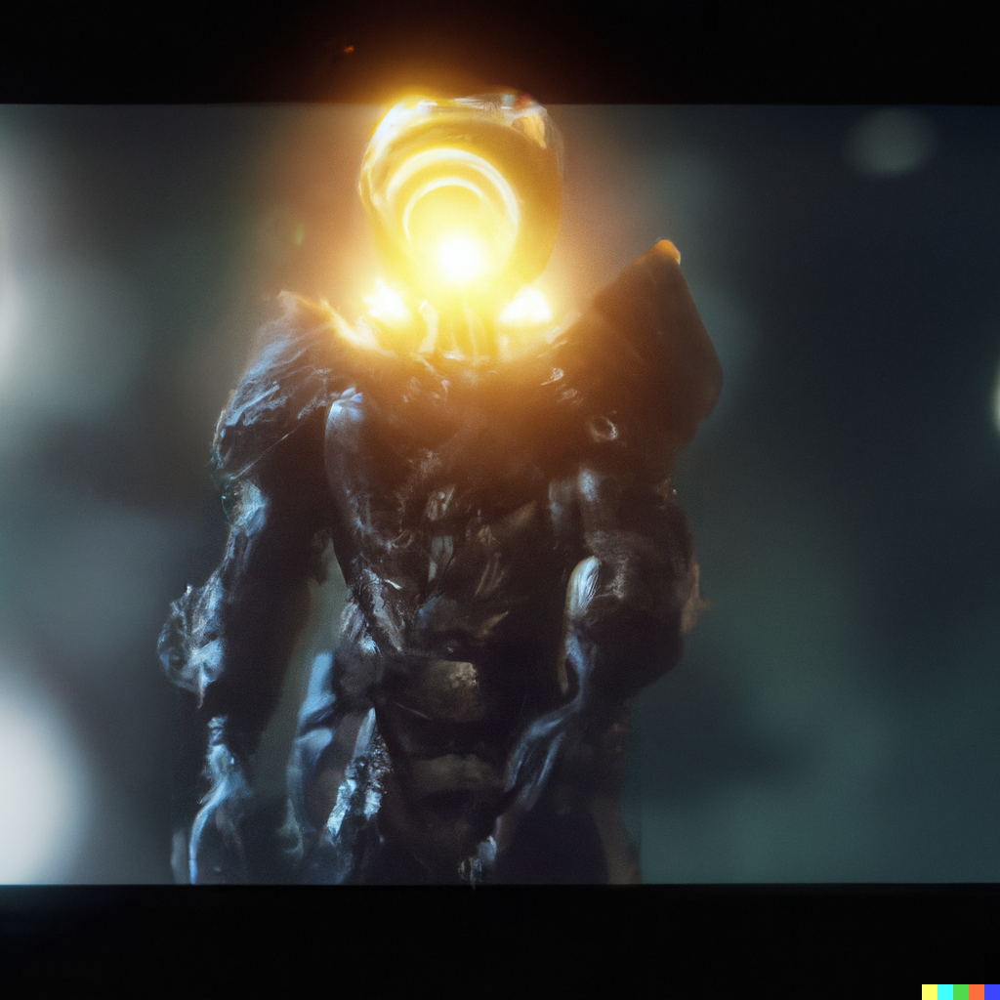

Nous avons eu la chance d'interviewer le maire de Saupiquet, Benhra, aujourd'hui voici un résumé de l'interview.
L'interview
Sara: Qu'est-ce que vous savez à propos des personnes s'étant dédoublées, ayant provoqué un élan de violence dans la ville ?
Maire: C'est un phénomène appelé "Dissociation", orchestré par Carl. Pour faire simple, toutes les personnes se trouvant dans le rayon de la vague se sont vues dédoublées et donc "dissociées". La deuxième personne qui est créée est une version identique à la version originale mais avec des sentiments décuplés. Je tiens à rassurer nos chers concitoyens que ce problème a été quasiment réglé et qu'il n'est plus un danger pour la ville aujourd'hui.
Sara: Très bien, nous n'avons donc rien à craindre à propos de ceux-ci...
Sara: Deuxième question, pourquoi certains bâtiments se sont envolés dans d'étranges portails dans les quatre coins de la ville ?
Maire: Ceci est lié aux événements surnaturels qui agissent sur notre ville. C'est globalement un événement qui a eu lieu afin de protéger la ville. Aux dernières nouvelles, il n'y a pas eu trop de dégâts humains. Nous mettons bien sûr tout en place pour combler ces manques et des périmètres de sécurité ont été mis en place. Il n'y a plus rien à craindre à ce sujet.
Sara: Et savons-nous où ces portails ont mené les bâtiments ?
Maire: Non, nous ne le savons pas, mais nous avons l'espoir de les retrouver, tout comme tous nos concitoyens qui se sont fait téléporter. Nous sommes sur la bonne voie et l'espoir n'a jamais été aussi grand.
Sara: Très bien, merci de rassurer le peuple, nous avons pour finir une dernière question. D'étranges personnages ont été aperçus vers le Quartier Chic, un internaute nous a fourni une photo de ceux-ci.
Maire: Oui, ce sont des Gardes qui ont pour mission de protéger le portail et d'empêcher quiconque d'y entrer. Ils sont inoffensifs tant qu'on ne les approche pas. Nous avons aussi déployé un périmètre de sécurité autour de ce portail.
Sara: Ils ont été aperçus en train d'agresser les forces de l'ordre.
Maire: Il n'y a pas eu de tels incidents. Les forces de l'ordre déployées sur place n'ont pas été attaquées par les Gardes et sont juste chargées de surveiller si des personnes outrepasseraient les Gardes.
Sara: Ce n'est pourtant pas ce que nous ont dit certains témoignages.
Maire: Je peux comprendre qu'avec la situation actuelle, il peut y avoir des confusions et des inquiétudes. En revanche, peut-être que ces témoignages ont un rapport avec l'introduction d'étrangers venant du Portail dans la ville. Nous ne connaissons pas encore leurs motivations, mais ils sont hostiles et ils seraient environ 5, dont une personne ayant l'apparence d'Elena Powell. Si vous voyez une personne lui ressemblant, n'agissez pas seul et contactez les forces de l'ordre.
Sara: Vous pouvez nous contacter sur notre site web si vous avez des informations, à l'adresse http://www.saupiquet.online/.
Voilà tout pour les questions, avez-vous des choses à dire à nos chers téléspectateurs ?
Maire: Oui, en effet. Je sais que cette situation s'ajoute aux diverses situations que cette ville a connues. Je sais que ce sont des moments d'inquiétude, de terreur, mais je dois vous demander d'avoir confiance et de garder espoir. Nous sommes parvenus à contrôler les plus gros problèmes et l'espoir de régler la situation et de retrouver nos proches disparus est très proche. Nous faisons tout pour assurer la sécurité de l'ensemble de la ville. N'hésitez pas si vous avez des soucis, des craintes ou quoi que ce soit à contacter la ville et nous ferons le maximum pour vous aider. Merci de m'avoir écouté et je m'engage, comme je l'ai toujours fait, à donner le maximum pour sauver la ville. Je vous souhaite une très bonne soirée.